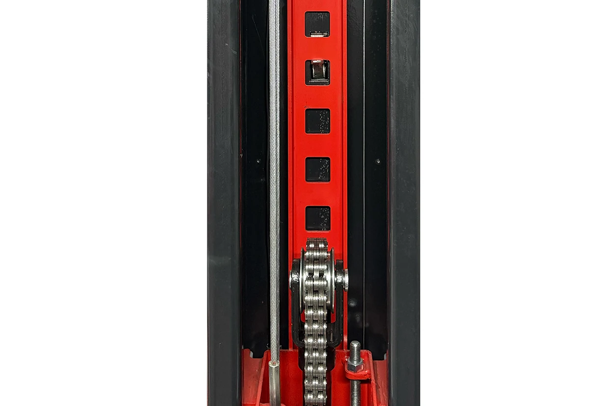

4 Ton İki Sütunlu Elektro Hidrolik Lift (Yarı Otomatik) - GPL 101
GPL 101- Güçlendirilmiş Gövde
- Yükseltici Takozlar
- Zincir, Halat ve Kilit
- Elektrik Panosu
- 2 Kademeli Kol
- Kilit Açma Kolu
| Kaldırma Kapasitesi | 4 Ton |
|---|---|
| Kontrol | Yarı Otomatik |
| Max. Kaldırma Yüksekliği | 1800 mm |
| Ara Mesafe | 2740 mm |
| Dıştan Dışa Lift Ölçüsü | 3300 mm |
| Sütun Yüksekliği | 2700 mm |
| Sütun Genişliği | 330 mm |
| Kısa Kol Ölçüsü | 760 - 1050 mm |
| Uzun Kol Ölçüsü | 760 - 1200 mm |
| Kaldırma Süresi | 50 sn |
| İndirme Süresi | 30 sn |
| Motor Gücü | 2.2 kW/3 Hp |
| Voltaj | 380V/220V |
| Ağırlık | 520 kg |
| Ambalajlı Ölçüsü | 2840x500x710 mm |